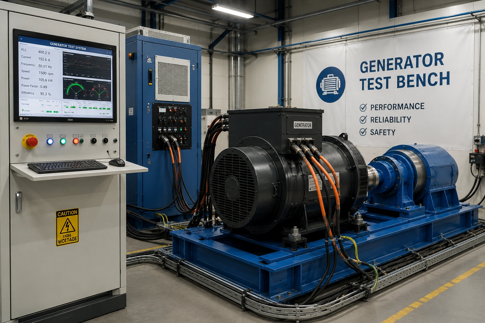
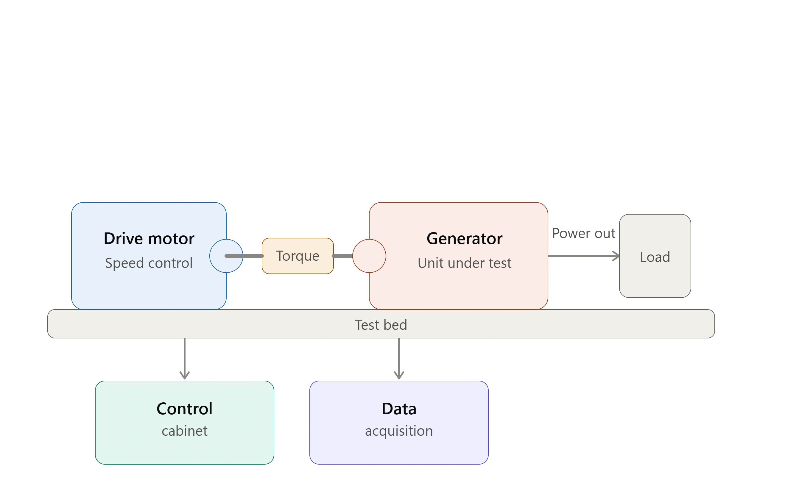
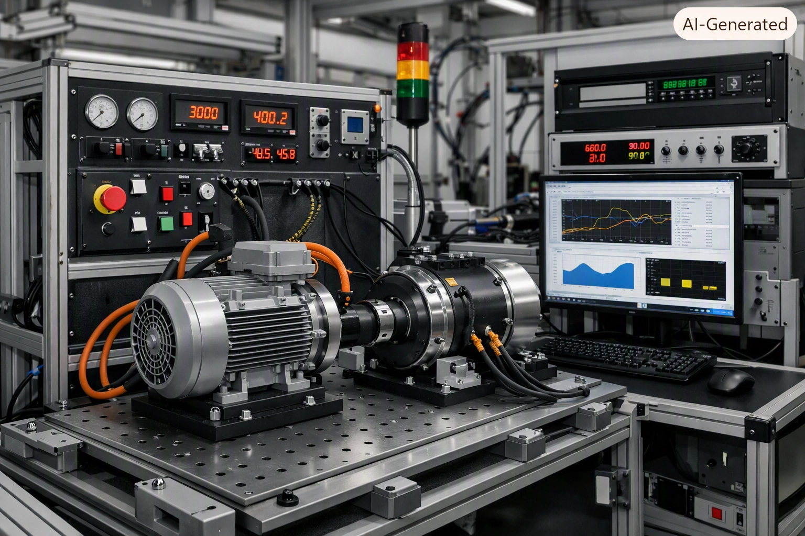

New Test Bench Development
Complete design and manufacturing of custom-built testing platforms for production, validation and research applications.
VayuCon designs and develops custom test bench solutions for electrical equipment, power converters, motors, generators, and industrial systems. Our solutions combine intelligent automation, precise measurement, and digital reporting to deliver reliable performance validation.
Complete design and engineering of custom validation systems tailored to production and laboratory requirements.
Intelligent automation using PLC programming, operator interfaces and industrial control systems.
High-speed measurement, sensor integration and automated data logging for complete traceability.
Automated reports, validation records and optional cloud-based monitoring for engineering analysis.


Modern manufacturing demands testing systems that are accurate, repeatable and capable of collecting detailed performance data. VayuCon develops customized test benches that combine industrial automation, instrumentation and intelligent software to simplify complex validation procedures.
Whether building a completely new test platform or upgrading an existing system, every solution is engineered to improve productivity, measurement accuracy and long-term reliability.
Our expertise covers every stage of a test bench lifecycle—from concept and design to automation, modernization and ongoing performance improvements.
Complete design and manufacturing of custom-built testing platforms for production, validation and research applications.
Upgrade ageing test benches with modern instrumentation, improved automation and enhanced digital capabilities while preserving existing infrastructure.
Develop intelligent PLC logic, HMI interfaces and industrial control systems that simplify testing operations and improve repeatability.
Integrate sensors, instruments and data acquisition hardware for accurate measurement, logging and engineering analysis.

Every test bench is engineered to deliver repeatable, traceable and operator-friendly testing through advanced automation platforms. Our engineers integrate PLCs, HMIs and industrial communication protocols to streamline complex testing procedures.
Custom control logic for automated testing sequences.
Intuitive operator interfaces for monitoring and control.
Integration with sensors, drives and measurement equipment.
Upgrade legacy controllers, instrumentation and electrical components with modern industrial solutions.
Introduce high-performance data acquisition systems and precision sensors for reliable validation.
Replace manual documentation with automated digital reports and engineering records.
Enable remote monitoring, centralized data storage and performance analysis through cloud-connected platforms.
Every solution is designed to deliver accurate measurements, repeatable testing procedures and comprehensive reporting to ensure confidence in every product evaluated.
Verify operational performance under predefined testing conditions before deployment.
Measure efficiency, electrical characteristics and system behaviour using calibrated instrumentation.
Generate detailed digital reports with measurement records, trends and validation summaries.
Maintain organized records for quality assurance, troubleshooting and future analysis.
Understanding customer objectives, testing parameters and operational requirements.
Developing electrical architecture, instrumentation layout and control philosophy.
Installation of hardware, PLC programming, HMI development and communication systems.
Functional testing, documentation, commissioning support and operator training.
Whether developing a new automated test bench or upgrading an existing system, our engineering team delivers solutions focused on precision, reliability and long-term operational efficiency.